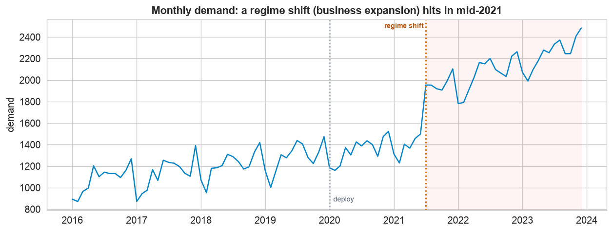
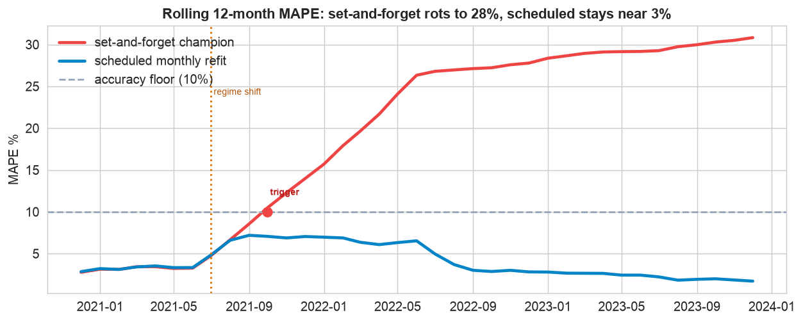
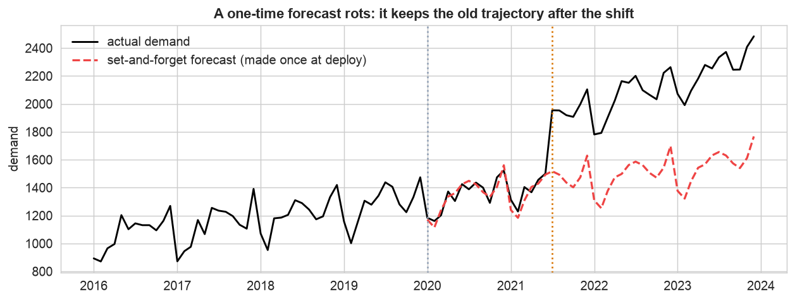
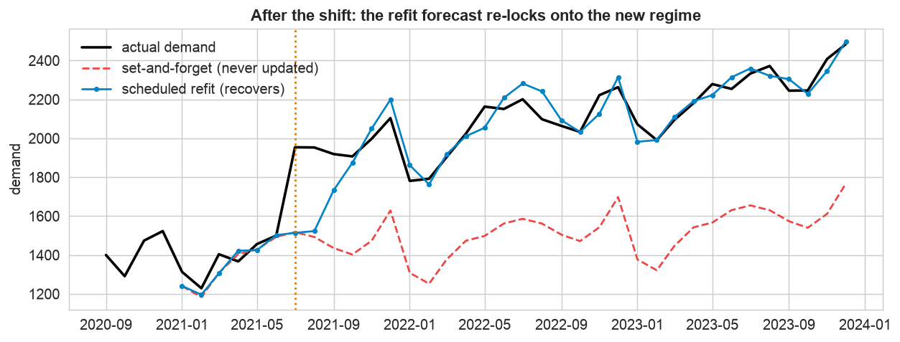
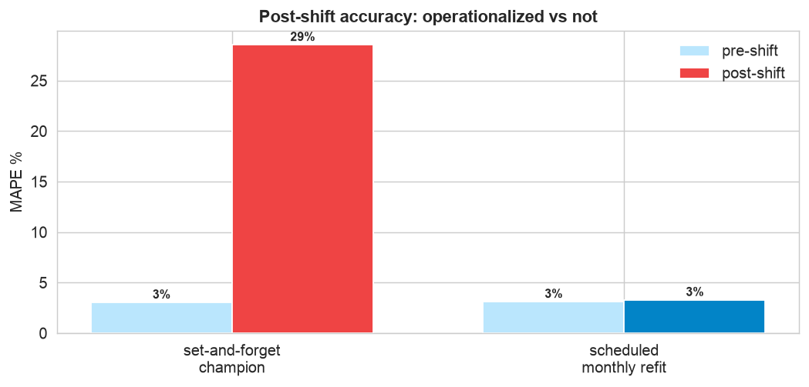

Every forecasting chapter so far ended at a good forecast. This one asks what happens next month, and the month after. A forecast that is accurate today can be badly wrong next quarter, because the world it learned from keeps changing. So the last skill is to operationalize it: package, serve, schedule refreshes, and monitor for drift, the forecasting version of MLOps.
The same Holt-Winters model, deployed two ways. A one-time forecast, never refreshed, rots to about 28% MAPE after a mid-2021 business expansion. A scheduled monthly refit, watched by a drift monitor, stays near 3%. The gap is not the model, it is whether anyone kept it fresh.
The 12-Step Forecasting-Ops Method
The same discipline as the ML MLOps chapter, tuned for forecasting. The companion notebook runs all twelve steps; the sections below tell the story and show the plots.
Monthly product demand, 96 months (8 years, 2016 to 2023), in units,
with a trend and 12-month seasonality. Its defining feature is a regime shift in mid-2021, a
business expansion that permanently lifted demand and steepened its growth. Two columns: month and
demand.
Build the Service: Package, Serve, Schedule (Steps 1–5)
Define the contract, package, and serve
First write the production contract: an accuracy floor (retrain if rolling MAPE tops 10%), a refresh cadence (monthly), and a horizon. Then package the fitted Holt-Winters model with metadata into a versioned artifact, and serve it behind a small function: load once, return a forecast with a prediction interval as a simple payload (a dict locally, a JSON response in production). A dashboard, an app, or the ordering system from Chapter 134 calls that endpoint, it never touches the model internals.
Schedule the refresh and log everything
The single most important forecasting habit is the scheduled refit: as each new month lands, refit on the latest data and forecast forward. That lets the model absorb gradual change automatically. We keep two pipelines to compare, the scheduled one and a set-and-forget champion (a forecast made once at deployment and never updated), and log every forecast so accuracy can be monitored when the actuals arrive.
Monitor, Detect Drift & Diagnose (Steps 6–8)
Monitor rolling accuracy

The event that breaks a stale forecast. Demand grows steadily, then a regime shift (a business expansion) hits in mid-2021: a permanent jump in level and a steeper trend. Everything trained before it now describes a world that no longer exists.

The two lines split violently. Both pipelines start near 3% MAPE. After the shift, the set-and-forget forecast (red), still projecting the old trajectory, climbs to about 28% and breaches the 10% accuracy floor, that breach is the retraining trigger. The scheduled refit (blue) barely bumps and recovers. Monitoring is what turns a silent decay into an alarm.
Detect the drift, then diagnose it

Set-and-forget rots. The champion forecast, made once at deployment and never updated, holds the old trajectory while actual demand steps up and steepens, so the gap only widens. Diagnosing it shows demand jumped about 56% and stayed there, a persistent regime change, not a one-off shock. Waiting cannot fix a stale model against a permanent shift; only retraining on the new data can.
Retrain, Embed & Deploy (Steps 9–12)
Retrain and validate the recovery

Scheduled retraining is the recovery. Because the scheduled pipeline refits every month, within a few months its expanding window has enough post-shift data to re-lock onto the new regime: its error spikes to about 23% at the shift, then falls back to about 2% three months later. No manual intervention, the automation is the fix.

Same model, opposite outcome. Pre-shift, both pipelines are near 3%. Post-shift, the set-and-forget forecast rots to about 28% while the scheduled, monitored one holds near 3%. The only difference is that one is operationalized and the other is not.
Embed, deploy, and govern the loop
Deployment closes the loop: the scheduled job refits on all data (now including the new regime), repackages the artifact, and the /forecast endpoint publishes the next six months with intervals, ready for a dashboard, an app, or the order system to consume. Every month it reruns; every month monitoring re-checks accuracy against the floor, and if it breaches, an alarm fires. The forecast stays alive. The plain-English ops report is below.
Communicate: the Plain-English Write-Up (Step 12)
For the operations team
What is this? Our demand forecaster, running as a live service the dashboard and ordering system call, kept accurate by an automatic monthly refresh and an accuracy monitor.
What goes in, and what comes out
Input: the demand history, updated each month. Output: a fresh six-month forecast with intervals, published to whatever app needs it, plus an alarm if accuracy slips.
The decisions we made, and why
- ✓We did not ship a one-time forecast. A forecast made once and left alone would have gone badly stale after the mid-2021 expansion, its error near 28%. So we refit it every month.
- ✓We monitor its accuracy. A rolling accuracy check watches for drift; if error crosses a floor, an alarm fires so we can investigate a possible regime change.
- ✓We served it as a shared endpoint, so the dashboard, the app, and the order system all consume the same, always-current forecast.
What it is worth, in plain terms
Keeping the forecast fresh held its error near 3% straight through a major business change that would have pushed a set-and-forget forecast to about 28%, a roughly ten-fold difference in accuracy, from operations alone.
The bottom line
A forecast is a living service, not a one-off number. We package it, serve it, refit it on a schedule, and watch it for drift, so it stays trustworthy even when the business changes. That is what keeps every decision built on it sound.
Run the full forecasting-ops loop in Python
The companion notebook is the whole 12-step lifecycle: it defines the production contract, packages the forecaster with joblib, serves a forecast endpoint returning a forecast and interval, schedules a monthly refit, logs forecasts against actuals, monitors rolling MAPE, detects the drift after the regime shift, diagnoses it, shows the scheduled retrain recovering, and redeploys the fresh forecast, every step explained.
View opens the rendered notebook instantly.
Open in Colab runs it live. To run locally, install numpy, pandas,
matplotlib, statsmodels, joblib, and openpyxl.
🎓 Key Takeaways
- ✓A forecast is a service, not a number: package it, serve it behind an endpoint, and let apps consume it.
- ✓Schedule the refresh: refitting on the latest data each period is the single most important forecasting-ops habit.
- ✓Monitor rolling accuracy: it turns a silent decay into an alarm; a floor breach is the retraining trigger.
- ✓Diagnose drift: a persistent regime shift needs retraining, not patience; a one-off shock does not.
- ✓Set-and-forget vs scheduled: same model, 28% vs 3% MAPE after a shift, the difference is operations.
Take It Further
Five ways to harden the pipeline in the notebook:
Automatic change-point detection
Use a CUSUM on the forecast errors to flag the regime shift automatically.
Interval coverage as a monitor
Track how often actuals fall inside the 95% band, a run outside is an early warning.
Expanding vs rolling window
Which retraining window recovers faster after the shift, and which is steadier?
Retraining cadence
Compare refitting monthly, quarterly, and yearly; add a triggered policy.
Backtest the pipeline
Replay the whole scheduled pipeline over history as a rolling-origin CI test.
All five, worked in a companion notebook
A second notebook, Take It Further, rebuilds the Chapter 135 pipeline and works every extension with explanations, a CUSUM change-point detector, interval-coverage monitoring, expanding versus rolling retraining windows, a retraining-cadence comparison, and a rolling-origin backtest as the CI test before deploy.
Quiz: Test Yourself
Eight questions on serving, scheduling, and monitoring a forecast. Answer them, hit Check Answers, and keep refining until you score 100%. Your progress is saved.
That closes Putting It All Together: the Forecasting Case Study, five end-to-end projects from a first forecast to a monitored production service. You have now taken time series from decomposition all the way to a living, self-refreshing forecast that drives real decisions.